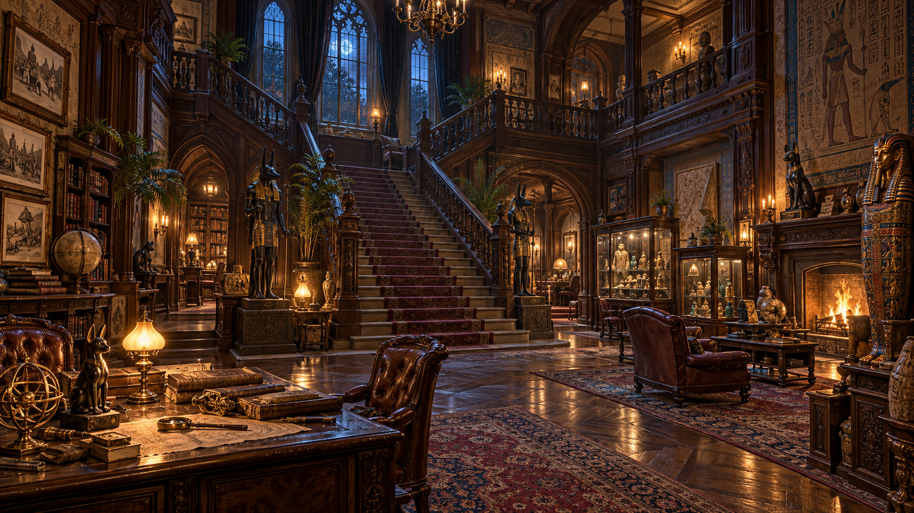
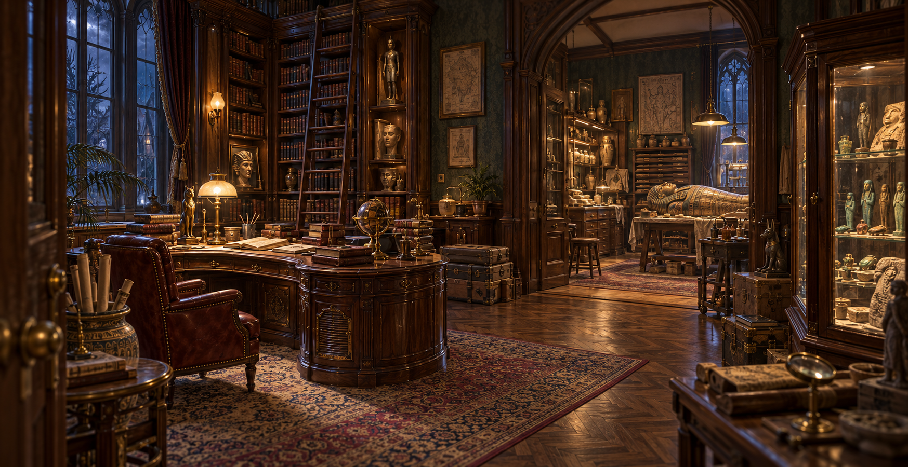

디자인 기준
목재, 천, 석재, 금속을 구분하고 방마다 기능과 생활 흔적이 보이도록 설계합니다. 참고 이미지는 분위기와 배치 원칙을 정하는 데 사용하고, 실제 게임 공간의 크기와 동선에 맞게 재구성합니다.
방의 용도에 맞는 가구, 벽 마감, 조명과 생활 흔적을 정해 저택 전체의 분위기와 기능을 설계하는 단계입니다.

아래 이미지는 실행 캡처가 아니라, 저택의 중앙홀·계단과 고고학자의 서재·연구실을 설계할 때 반영하는 시각 기준입니다.


목재, 천, 석재, 금속을 구분하고 방마다 기능과 생활 흔적이 보이도록 설계합니다. 참고 이미지는 분위기와 배치 원칙을 정하는 데 사용하고, 실제 게임 공간의 크기와 동선에 맞게 재구성합니다.
서재와 연구실은 주인의 연구 기록과 이집트 유물 이야기를 발견하는 장소가 됩니다. 장식은 이동 경로와 퍼즐 시선을 가리지 않는 밀도로 배치합니다.